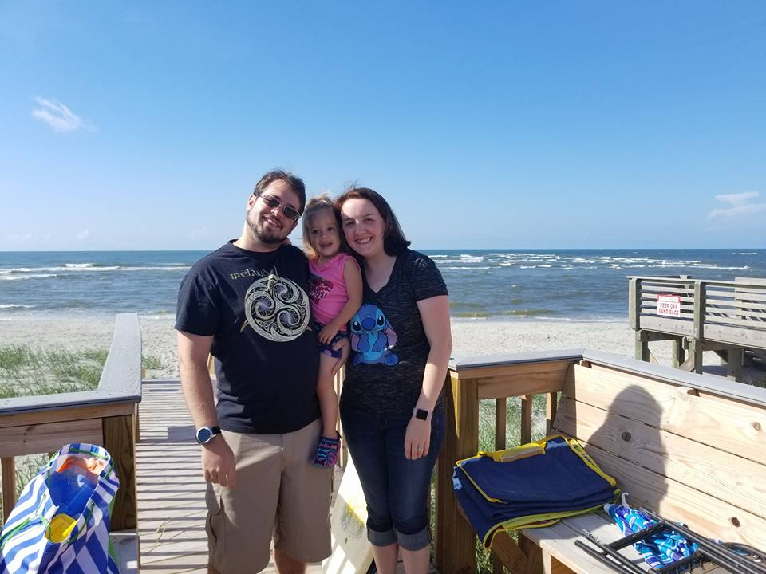

About Me
Personal life
I'm the baby of my family, growing up with two older brothers and an older sister. I grew up mostly homeschooled in elementary school, going back to public school in middle and high school. It was the end of my freshman year of high school that I met my wife. We've now been married for almost 7 years and have a beautiful daughter as well as new baby boy.
When I'm not programming, I enjoy spending time with my family, playing piano, playing video and tabletop games, reading, and gardening. I'm currently acting as the Dungeon Master, or DM, for a Dungeon & Dragons game with my wife, father, sister-in-law, and niece all as players. I'm also an avid player of League of Legends, though I recently enjoyed playing through the Horizon series. My favorite video games would have to be League of Legends, World of Warcraft, Star Wars: Knights of the Old Republic, and StarCraft. As for books, I enjoy fantasy. I've read through many of R.A.Salvatore's Drizzt series and have finished the first series of the new Star Wars: The High Republic book series.
If you want to know more about me, feel free to follow me at one of the sites below, or reach out to me.
Early Life with programming
I grew up in New Albany, Indiana, a small city across the river from Louisville, Kentucky and was homeschooled most of my early education. During the times at home, I had the privilege to travel with my family when my father went on business trips, learning about things like the state bird and the state flower for wherever we were visiting. I also began to discover my love of learning.
Math and science were always my go-to subjects that I wanted to complete first. I enjoyed going past what I was required to do in those subjects. When I was around 10 years old, my dad introduced me to programming.
One day, after I had finished my schoolwork, my dad asked me if I wanted to see what he does for his job. Of course, I said, "Sure!" He sat me down at his computer, set a book in front of me and told me, "Type exactly what you see in the book, then save, and run it. Tell me what it does." For the next hour, I typed away at 2 large pages of text, not really understanding what I was putting in. Once I was done, I ran the program.
It popped up a small box that said "Hello World" and had an "OK" button. I was amazed. "If it took that much code to do that little, how does everything else work?" I thought.
Once I went back to public school, every chance I had to be in a computer or programming class, I'd take it. I took general computer use and typing class in middle school. When I got to high school, I learned some Q-Basic, Visual Basic, and finished with taking AP Java, ultimately earning a 5/5 on the AP exam.
College and conquering depression
After I graduated high school, I started going to a local college working toward an associates degree in computer science, planning to continue into a bachelor's afterwards. Unbeknownst to me at the time though, I had started a battle with depression. I slowly stopped caring about things and stopped enjoying the things I used to. It started out little by little, slowly growing to the point where nothing was enjoyable anymore. I found no enjoyment in playing the games I used to love. Puzzles and programming didn't feel fulfilling anymore.
At that point, I was three years into college. Though I had learned new languages such as IBM Assembler and some SQL, still wasn't close to finishing my associates degree. Between the depression I didn't realize I had, the discouraging feeling about how much I had left to do, and getting the news that I was going to be a father, I decided to leave school to focus on supporting my family.
While out of college, I tried learning on my own through Udemy and YouTube, but had trouble completing courses due to my depression. A few years later, I tried going back to college, but I still hadn't dealt with my mental health and was only able to stay for a semester. It was only through the help of my wife that I finally was able to talk to a doctor and start to take control of my life again. I've found my joy again. Upset that I didn't take care of this sooner, I do my best to be open about my mental struggles in hopes that, if someone hears my story and they're facing the same things, it'll encourage them to seek help like I did.
Since then, I've jumped back into programming with renewed vigor, earning the Unity Essentials and Unity Junior Programmer badges as well as completing a Data Analytics course through Code Louisville.
I recently enrolled at Ivy Tech Community College to work toward completing my Associate of Applied Science in Software Development, but in the meantime, I have been working through courses on Gamedev.tv.